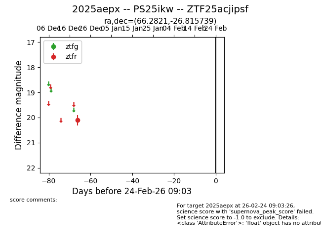
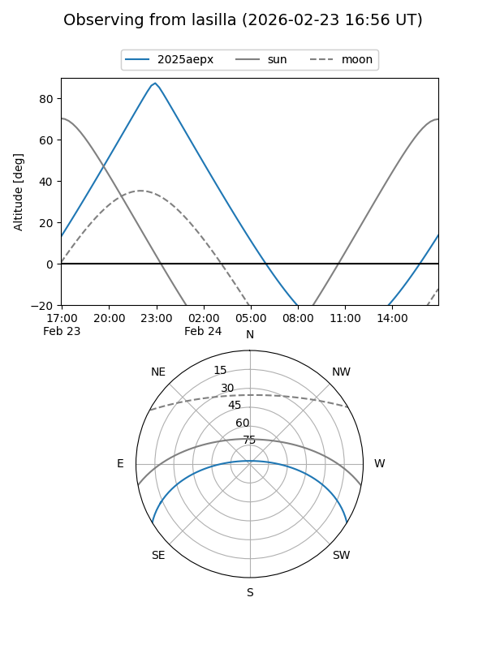
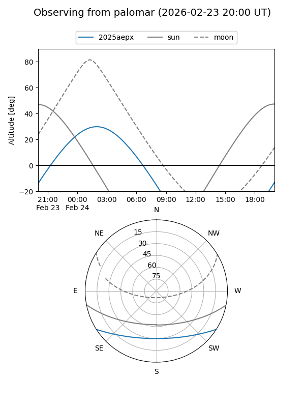

2025aepx
Target 2025aepx at 2025-12-31 03:16
Aliases and brokers:
FINK:
Lasair:
ALeRCE:
TNS:
YSE:
alt names
ZTF25acjipsf (ztf,fink_ztf)
2025aepx (tns,yse)
PS25ikw (panstarrs)
Coordinates:
equatorial (ra, dec) = 66.2821,-26.81574
equatorial (HMS+DMS) = 04:25:07.70,-26:48:56.66
galactic (l, b) = (225.4398,-42.76733)
Flags:
Photometry:
last ztfr=20.11
1 ztfr detections
Lightcurve

Visibility


Additional plots